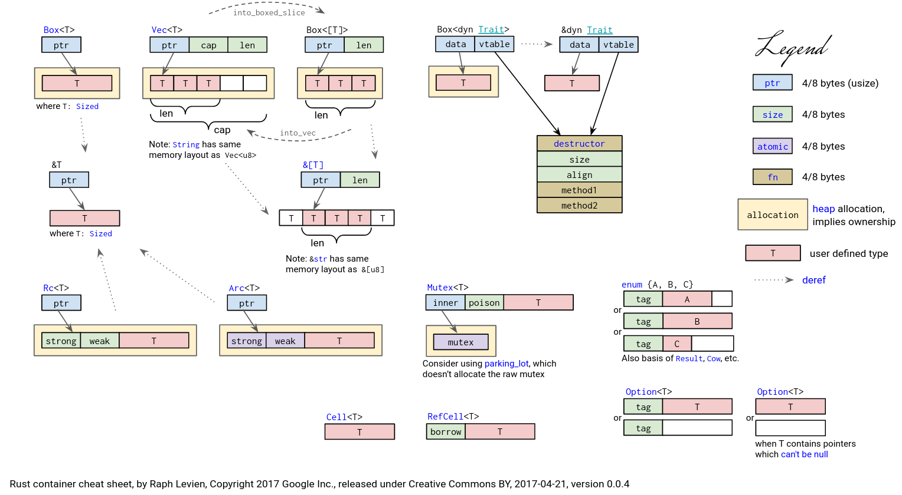
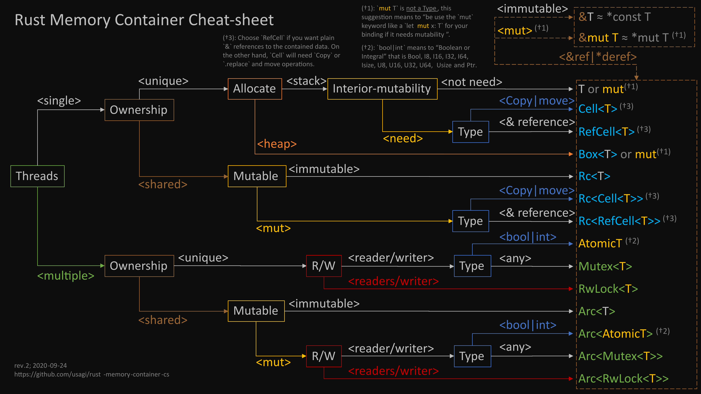

## Rust for Python Developers ```rust fn main() { println!("Hello Python Summit - Python ❤️ Rust!"); } ``` Note: Evangelize you all to the Cult of Rust Last Python Summit, so I can say whatever I want --- ## Who's Dave - Programming for almost 20 years - 12 years of Python - 2 years of Rust Note: - Delphi: Mandelbrot / Terrorist's Revenge - Not on slides: PHP Pages mobile phones & IE 6 & Objective C & 3D thing first IPhone - PHP Regex --- ## Who's Dave - First good program: [Jedi](github.com/davidhalter/jedi) - Work at cloudscale.ch with Python/Django and React & Go (for Kubernetes & Terraform) Note: - jedi-vim/parso 2012 3 years afghanistan - cloudscale no money - 5th best programmer / ts / mypy - I like when programming is expressive, don't care about enterprise > 10 people - I was very religious --- ## Why Rust? - Jedi could be faster - Rust is considered to be 10-100 times faster in Micro Benchmarks - Generally **memory safety** - No Garbage Collection Note: - Jedi Algorithms could be better --- ## The programming world likes Rust - Both languages have liberal licenses, are "democratic" and have a friendly, big community - Rust uses cargo as a package manager (> pip) - RipGrep - Dropbox rewrote their low-level disk access (go to rust) Note: --- ## Google Trends  Note: --- ### Stackoverflow Developer Survey 2022 - 86% loved Rust - 67% loved Python Note: --- ## This is mostly hype - Python is the primary language in universities for science - Rust is a language that's barely used in professional environments - People loved Python before they used it Note: - General trend, people loved Go at the time - And TypeScript (pretty good) - So what is rust? --- > The Rust programming language helps you write faster, more reliable software. <div style="text-align: right; margin-right: 150px">- The Rust Book Note: --- ## General considerations - An approachable syntax for Python Developers, unlike functional languages - Both languages have liberal licenses, are "democratic" and have a friendly, big community - Rust uses cargo as a package manager (> pip) - Rust is currently hyped by a lot of people, some people think of it as a fancier go, which is wrong Note: --- # Rust: ## The Easy Parts Note: - very broad overview. Lots of good tutorials out there --- ## A first example Rust: ```rust fn foo(a: i64, b: i64) -> i64 { return a + b } ``` Python: ```python def foo(a: int, b: int) -> int { return a + b } ``` Note: --- ## Simplified ```rust fn foo(a: i64, b: i64) -> i64 { a + b } ``` Note: --- ## Adding an if ```rust fn foo(a: i64, b: i64) -> i64 { if a >= 0 { a + b } else { # First macro, yay! println!("Found a negative value"); 0 } } ``` Note: --- ## Simple Strings Rust: ```rust fn foo(a: String) -> String { if !a.ends_with("s") { a += "s"; } a } ``` Python: ```python def foo(a: str) -> str { if !a.endswith("s") { a += "s" } return a } ``` Note: --- ## String References ```rust fn foo(a: &str) -> &str { if !a.ends_with("s") { # Does not compile, we cannot change # an immutable reference. a += "s"; } a } ``` Use this instead: ```rust fn foo(a: &str) -> String { let a = a.to_owned(); if !a.ends_with("s") { a += "s"; } a } ``` Note: --- # Rust: ## The Smart Parts Note: --- ## Simple Macros - `todo!()` / `unreachable!()` - `format!("foo")` / `println("foo")` - `assert!(1 < 2)` - `dbg!(a * 2) + 1;`<br/>prints:<br/> `[src/main.rs:2] a * 2 = 4` Note: --- ## Structs & Enums ``` struct Datetime { date: String, time: String, } enum Value { Number(f64), Str(String), Bool(bool), Datetime(Datetime), Null, } ``` Note: --- ## Results & Options ``` enum Option<T> { Some(T), None, } enum Result<T, E> { Ok(T), Err(E), } ``` Note: Who's using Python 3.10? --- ## Pattern Matching Rust: ``` // number will be an `Option<f64>` let number = match give_me_value_pls() { Value::Number(number) => number, Value::String(string) => todo!("Why a string {string}?"), _ => None, } ``` Python 3.10+: ``` match give_me_value_pls(): case float() as n: number = n case string(): raise NotImplementedError case _: number = None ``` Note: --- ### Pattern Matching is awesome ``` match give_me_values() { [] => println!("was empty"), [Value::String("Hello"), Value::String("World")] => { println!("Found Hello World"), } [one, two] => println!("{one} or {two}"), [one, two, tail @ ..] => todo!(), } ``` Note: --- # Rust: ## The Hard Parts Note: --- ## Traits ``` trait Named { fn name(&self) -> String; } ``` Note: --- ## Creating Macros ```rust macro_rules! say_hello { // `()` indicates that the macro takes no argument. () => { println!("Hello!"); }; } fn main() { say_hello!() } ``` Note: --- ## Lifetimes & Ownership ```rust fn longest(x: &str, y: &str) -> &str { if x.len() > y.len() { x } else { y } } ``` Note: --- ### Resulting Error <pre> $ cargo run Compiling chapter10 v0.1.0 (file:///projects/chapter10) error[E0106]: missing lifetime specifier --> src/main.rs:9:33 | 9 | fn longest(x: &str, y: &str) -> &str { | ---- ---- ^ expected named lifetime parameter | = help: this function's return type contains a borrowed value, but the signature does not say whether it is borrowed from `x` or `y` help: consider introducing a named lifetime parameter | 9 | fn longest<'a>(x: &'a str, y: &'a str) -> &'a str { | ++++ ++ ++ ++ For more information about this error, try `rustc --explain E0106`. error: could not compile `chapter10` due to previous error </pre> Note: > --- ### Code should be ```rust fn longest<'a>(x: &'a str, y: &'a str) -> &'a str { if x.len() > y.len() { x } else { y } } ``` Note: --- # Rust: ## The Insane Parts Note: --- ## Unsafe Rust - It is extremely hard - Just do not do it - No really, I warned you. Note: --- ### Lifetimes in Higher-Rank Trait Bounds (HRTB) An issue I created at [rust-lang/rust#91942](https://github.com/rust-lang/rust/issues/91942) ```rust fn funnel<'lt> (f: impl Fn(&mut State<'lt, '_>)) -> impl Fn(&mut State<'lt, '_>) where 'static : 'lt, // make it turbofishable { f } ``` Note: --- ### Trait lifetime bounds are bugged An issue I created at [rust-lang/rust#92520](https://github.com/rust-lang/rust/issues/92520) ```rust trait Trait<'global: 'a, 'a, HackyProof = &'a &'global ()> // Should be: trait Trait<'global: 'a, 'a> ``` Note: --- ## Crazy Macros ```rust use inline_python::python; let who = "world"; let n = 5; python! { for i in range('n): print(i, "Hello", 'who) print("Goodbye") } ``` Note: '> --- ### Is Rust buggier than Python - Rust has 3200 open bugs - Python has 2800 open bugs - Like Python, Rust feels extremely stable - Some of Rust's complex feature are buggy Note: --- # Case Studies Note: - Advantages of languages and architecture choices - No, none of the case studies cover the ego-shooter - Enterprise Software rambling --- ## Case Study #1: Jedi - The open source alternative to PyCharm - Plugins for all major editors - 460m Downloads on PyPI Note: - Was a working prototype after 3 months - except Exception - CPU bound --- ## Case Study #2: ### Jedi & Mypy in Rust Note: --- ## Jedi & Mypy in Rust - Passing 1/5 of the Mypy test suite - 20x faster with a debug build than Mypy - 650x faster with a release build than Mypy - Not finished - Not public Note: Do not underestimate me, it will be finished --- ## Case Study #3: cloudscale.ch Note: - VMs - Like most web projects it's IO-bound, limited by the database or services - We initially had 3 months to rewrite in Python, would choose Rust now, but might be a mistake --- # Summary Note: --- ## Rust Pros/Cons - 😀 Extremely well designed type system - 😀 No GC / Memory Safety / Performance - 😀 Data oriented programming - 😐 Strict, hard to test something - 😕 Hard to read/learn - 😕 Lifetimes and Ownerships lead to unproductive days - 😕 Mental model needed of Stack/Heap Note: --- ### [Container Cheatsheet](https://docs.google.com/presentation/d/1q-c7UAyrUlM-eZyTo1pd8SZ0qwA_wYxmPZVOQkoDmH4/edit#slide=id.p)  Note: --- ### [WTF Cheatsheet](https://github.com/usagi/rust-memory-container-cs)  Note: --- ## What to pick | Rust Strengths | Python Strengths | |---------------------------------------------|----------------------| | High performance,<br/>CPU/Memory bound problems | Data Science, AI | | Avoiding bugs | Prototypes | | Team of very capable devs | Team of average devs | | You want one binary | Hackable / Debuggable | Note: - really good = type system experience - Also note I like the non-enterprise context --- ## Questions? Work: https://cloudscale.ch twitter: @jedidjah_ch github: @davidhalter Note: This is the last Python Summit, thanks Danilo, Denis & Samuele